Overview
This chapter describes how to install the Zebra SMS and 123Scan on recommended platforms.
Download the SMS Solution from the Web
Both the SMS Solution and 123Scan must be downloaded to utilize the SMS Solution. Both utilities can be downloaded from www.zebra.com/sms, or download 123Scan from www.zebra.com/123Scan.)
System Requirements
123Scan Requirements
Hardware Requirements
- Pentium Dual-Core E214 1.6GHz or Pentium Mobile Dual-Core T2060 or Pentium Celeron E1200 1.6GHz
- 2GB RAM and 1.2 GB free hard drive space
- USB port, 1.1 or higher, for the connection of USB Scanners
Software and Operating System Requirements
- Microsoft Windows 7 or 10 (32 bit/64 bit)
- If not present, Microsoft .NET Framework 3.5 SP1 loaded at time of initial 123Scan installation
- Minimum display resolution = 1024 by 768 pixels
SMS Solution Requirements
Supported Operating Systems
The Zebra SMS supports the following Operating Systems:
- Windows 10 32bit
- Windows 10 64bit
SMS Solution Size
The Zebra SMS 32bit installation package is approximately 20 MB in size. The Zebra SMS 64bit installation package is approximately 30 MB in size. Once installed in a production environment, the SMS solution size decreases.
Table 1: Installed SMS Solution Sizes
| Typical Installed Solution Size | 32bit | 64bit |
|---|---|---|
| SMS agent | 4 MB | 9 MB |
| SMS Package for one model scanner | 3 MB | 3 MB |
| Total required space | 7 MB | 12 MB |
Installing the Solution
The following steps show the process to install 123Scan and the SMS Solution.
Install 123Scan (v5.0 or newer)
To install 123Scan:
- Go to www.zebra.com/us/en/support-downloads/software/utilities/123scan-utility.html.
- Scroll down to the Software section and select and run the relevant OS download for your PC (123Scan 32bit or 123Scan 64bit).
-
The Zebra CoreScanner Driver is a prerequisite for both the 32bit and 64bit setup programs. The installation process checks for the CoreScanner driver on the target PC. If the CoreScanner driver is not present, or is outdated, clicking Install adds updated drivers before installing the Zebra 123Scan package.
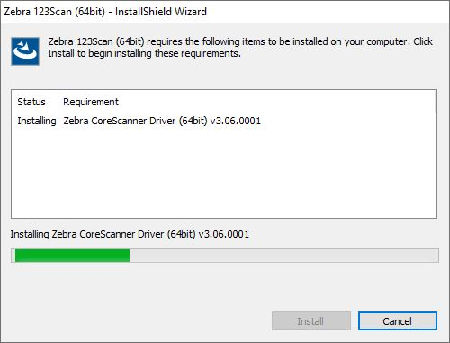Figure 1: Installation of Zebra CoreScanner Driver WindowThe Microsoft .NET Framework is also a prerequisite for Zebra 123Scan. If .NET is not available in the system, the installer lists it as a requirement and installs it as part of the setup process.
-
Click Next in the Welcome window.
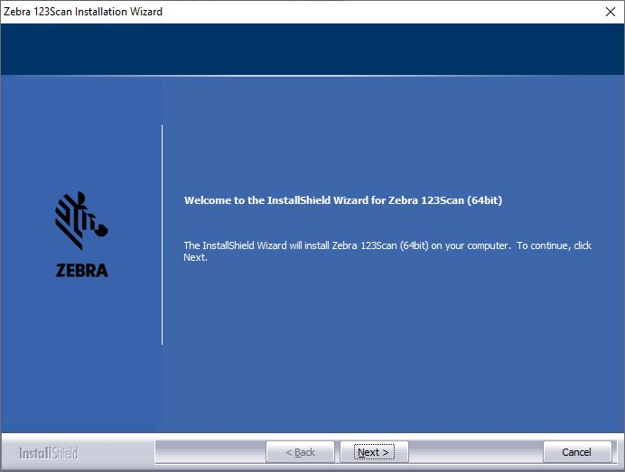Figure 2: Welcome Window -
Review the license agreement and click Yes to accept.
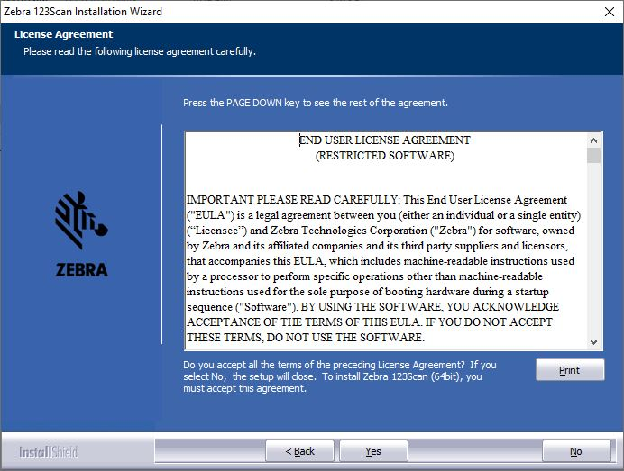Figure 3: License Agreement Window -
Click Install to install 123Scan.
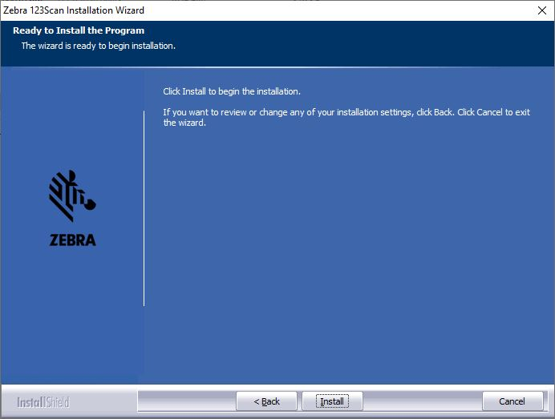Figure 4: Ready to Install Window -
As the installation proceeds, the status displays.
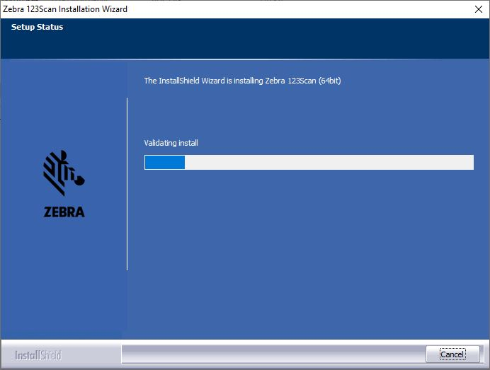Figure 5: Installation Status Window -
When the installation is complete, the following window displays. Click Finish.
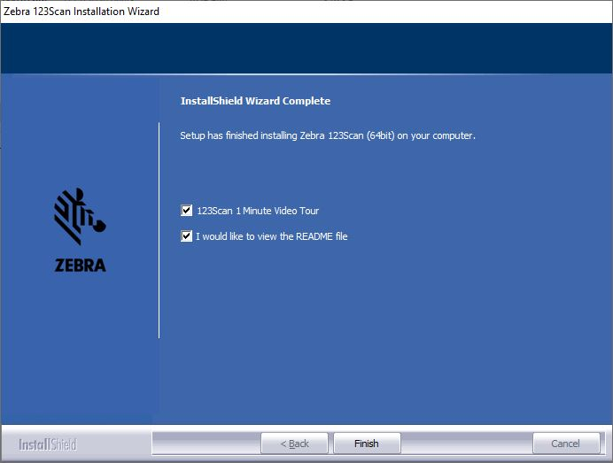Figure 6: Installation Complete Window
Install SMS
To install SMS:
- Go to www.zebra.com/us/en/support-downloads/software/utilities/scanner-management-service-for-windows.html.
- Scroll down to the Software section and select and run the relevant OS download for your PC (SMS 32 Bit, or SMS 64 Bit).
- If you previously installed 123Scan on the same PC, the Zebra CoreScanner Driver (a prerequisite for both the 32bit and 64bit setup programs) was already installed. If you are installing the SMS Solution first, or on a different PC than 123Scan, the CoreScanner driver automatically installs before the SMS Solution installation.
-
Click Next in the Welcome window.
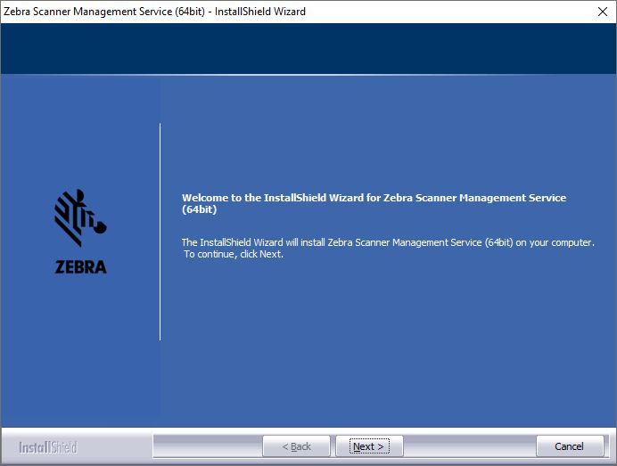Figure 7: Welcome Window -
Review the license agreement and click Yes to accept.
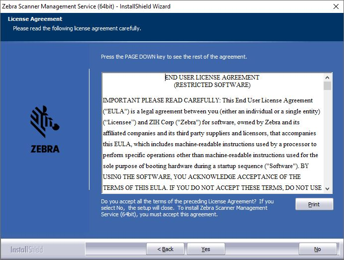Figure 8: License Agreement Window -
Click the appropriate radio button for the type of setup to install.
- Complete setup installs all Zebra SMS components.
- Custom setup allows the user to de-select Start menu shortcuts for Developer Utilities.
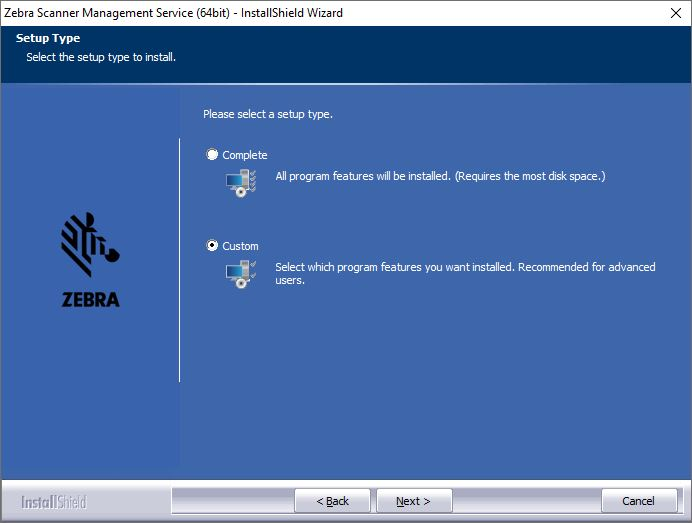Figure 9: Select Type Window -
Click Next to continue with the installation.
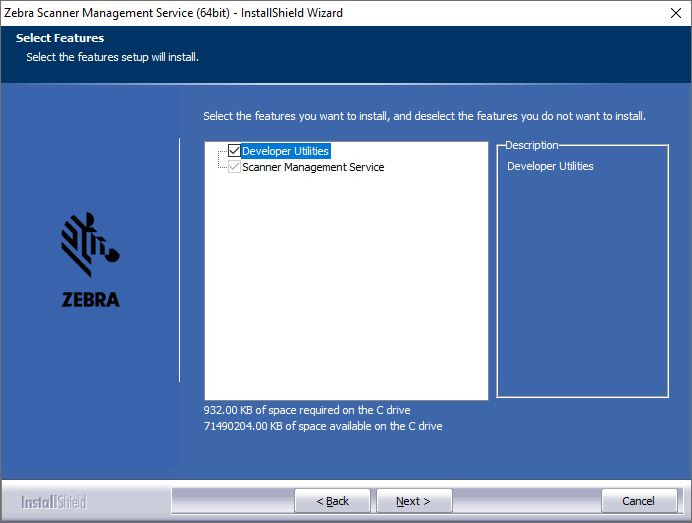Figure 10: Select Feature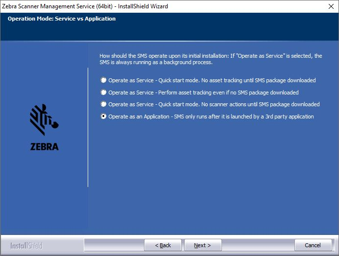Figure 11: Select Default SMS Package -
Click Install to continue.
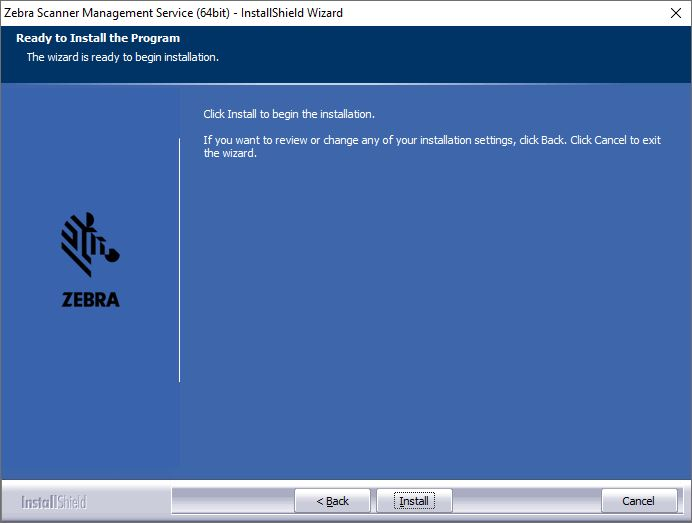Figure 12: Ready to Install Window -
When the installation is complete, the following window displays. Click Finish.
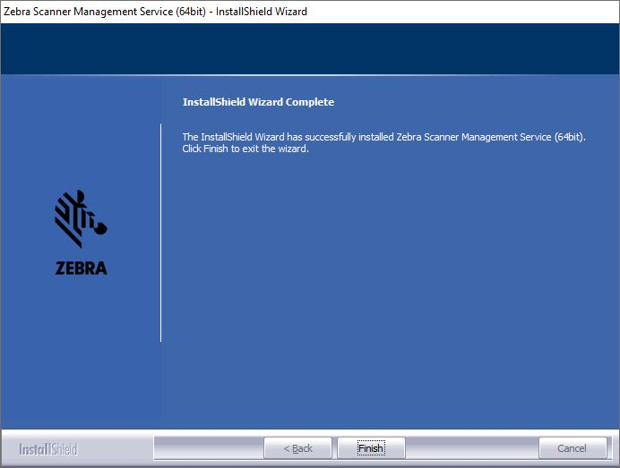Figure 13: Installation Complete Window
Silent Unattended Installation of the Zebra Scanner Management Service
The Scanner Management Service (SMS) for Windows require the Microsoft 2019 C++ Redistributable Package which automatically installs if it is does not already exist on the host PC. For an unattended installation, a complication arises if the 2019 C++ Redistributable is not pre-installed. By default, Microsoft triggers a reboot of the PC after the C++ Redistributable installation. In this case, a reboot is injected into the overall silent install process (which may then also require a login).
To avoid the interruption, the 2019 C++ Redistributable can be downloaded from Microsoft and pre- installed silently while suppressing the reboot using the command line switches /install /quiet /norestart. This delays the required reboot, and allows a custom silent SMS for Windows install to be performed using a subsequent command.
The Visual C++ Redistributable for Visual Studio 2019 can be downloaded from the Microsoft website. The appropriate file vcredist_x86.exe (32-bit version) or vcredist_x64.exe (64-bit version) must be selected and downloaded.
The command line to perform its install silently without reboot is:
vcredist_x86.exe /install /quiet /norestart
or,
vcredist_x64.exe /install /quiet /norestart
The required reboot must be performed at the end of the overall installation process to ensure correct operation.
The Zebra Scanner Management Service and prerequisite CoreScanner driver are packaged using the Flexera InstallShield installer program. Options can be selectively installed using the Custom Installation option. In conjunction with this custom install option, the installer program supports command line switches to record custom responses that can be used to create a silent install response file. These response files, ending in the file extension .iss, may then be used to perform a silent installation of the CoreScanner driver and SMS components on production PCs.
Silent Install Command Line Options
Command Line Switch Description
Table 2: Command Line Switch Description
| Switch | Description |
|---|---|
| -s | Silent mode. The -s switch runs the installation in silent mode using the responses contained in a recorded response file. |
| -r | Record mode. The -r switch displays all the setup dialogs and records the chosen responses in the file specified with the -f1 switch described below. |
| -f1 | Specify custom response file name and path. The -f1 switch specifies where the response file is located for the -s switch, or where it should be created when using the -r switch. Specify an absolute path; using a relative path yields unpredictable results. |
| -f2 | Specify alternative log file name and path. When running an installation in silent mode (using the -s switch), the log file is created by default in the same directory and with the same name (except for the extension) as the response file. The -f2 switch enables you to specify an alternative log file location and file name. Specify an absolute path; using a relative path yields unpredictable results. |
When executed from a command prompt, the example below uses the -r and -f1 switches to record your responses to the setup prompts into a custom response file:
"Zebra_CoreScanner_Driver_(64bit)_v3.07.0002.exe" -r -f1"c:\path\CSsetup.iss"
The responses chosen using the command above are saved in the specified response file and can then be used as input to silently install the CoreScanner with those chosen responses on production PCs.
The next example shows how the -s switch uses the response file created with the previous command to perform the silent install:
"Zebra_CoreScanner_Driver_(64bit)_v3.07.0002.exe" -s -f1"c:\path\CSsetup.iss"
Note that there is no space between the -f1 switch and first quotation mark for the custom response file.Additionally, you would perform the above steps for the silent installation of the SMS. Record the SMS response file using the -r switch on a PC that does not yet have SMS installed:
"Zebra_Scanner_Management_Service_(64bit)_v4.02.0010.exe" -r -f1"c:\path\SMSsetup.iss"
Then use that resulting response file with the -s switch to install silently on other PCs:
"Zebra_Scanner_Management_Service_(64bit)_v4.02.0010.exe" -s -f1"c:\path\SMSsetup.iss"
If necessary, the -r switch option can also be used to record a custom response file for a silent removal of a program by running the command on a PC that has that program already installed.
Components and Folder Paths
SMS Components
Table 3: SMS Components
| Component | Description | Installation Path |
|---|---|---|
| SMS agent folder | SMS installation folder. User cannot customize this location. | %ProgramFiles%\Zebra Technologies\Barcode Scanners\SMS |
| SMS Package download folder | Folder on PC host in which SMS Packages are placed for processing. | %ProgramFiles%\Zebra Technologies\Barcode Scanners\SMS\Download |
| SMS default log folder | Default log file folder. User can change the logging location in the package at creation time. | %ProgramFiles%\Zebra Technologies\Barcode Scanners\SMS\Download\Logs |
| Launch SMS as an Application | Executable file to launch SMS as an application. | %ProgramFiles%\Zebra Technologies\Barcode Scanners\SMS\SmsService.exe |
| Start SMS agent | Script file to start the SMS agent. | %ProgramFiles%\Zebra Technologies\Barcode Scanners\SMS\Start SMS Agent.bat |
| Stop SMS agent | Script file to stop the SMS agent. | %ProgramFiles%\Zebra Technologies\Barcode Scanners\SMS\Stop SMS Agent.bat |
| Release notes | Release notes. | %ProgramFiles%\Zebra Technologies\Barcode Scanners\Release Notes Windows SMS.pdf |
123Scan Components
Table 4: 123Scan Components
| Component | Description | Installation Path |
|---|---|---|
| Application | Application EXE and the supporting DLLs of the program | %ProgramFiles%\Zebra Technologies\Barcode Scanners\123Scan2 |
| Configuration files | Default location of Configuration Files | Users\Public\Documents\123Scan2\Configuration Files |
| Activity reports | Default location of Activity Reports | Users\Public\Documents\123Scan2\Activity Report Database |
| Data view reports | Default location of Data View Reports | Users\Public\Documents\123Scan2\Data View Reports |
| Saved images | Default location of Saved Images | Users\Public\Documents\123Scan2\Images |
| SMS Packages | Default location of SMS Packages | Users\Public\Documents\123Scan2\ SMS Packages |
| Scanner plug-Ins | Scanner Plug-Ins | ProgramData\123Scan2\Plug-ins |
| Application help document | Application Help Document | Program Files\Zebra Technologies\Barcode Scanners\123Scan2\Languages\en-us |